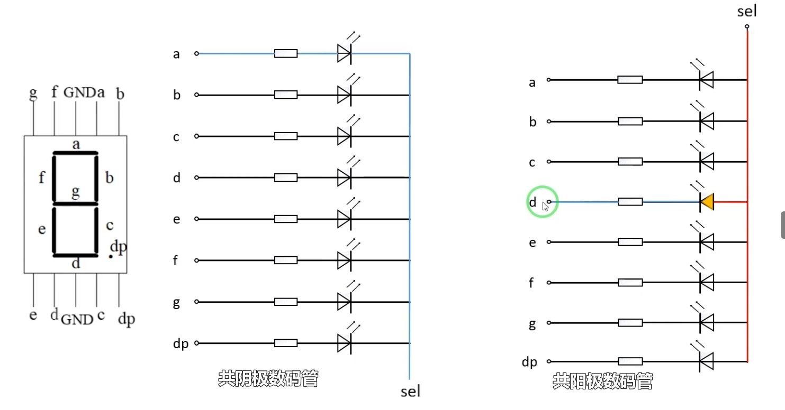
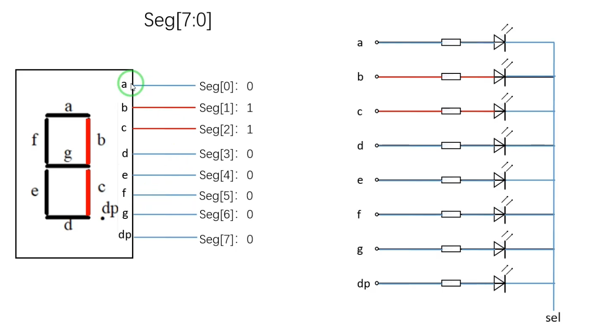
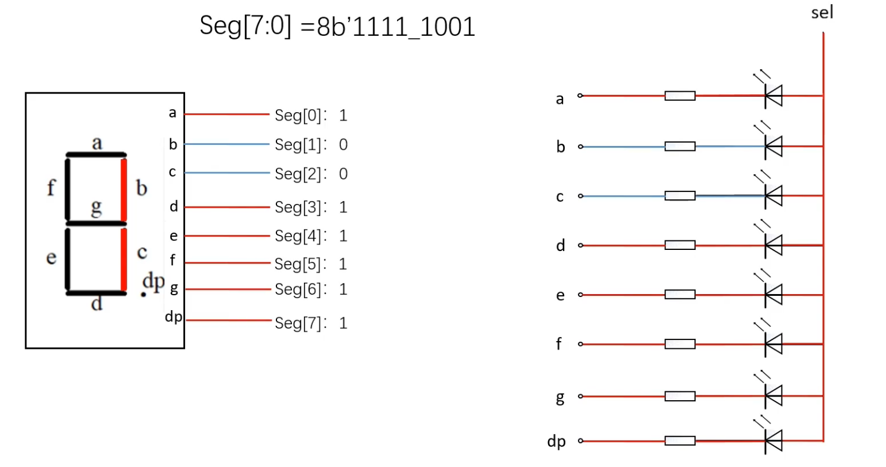
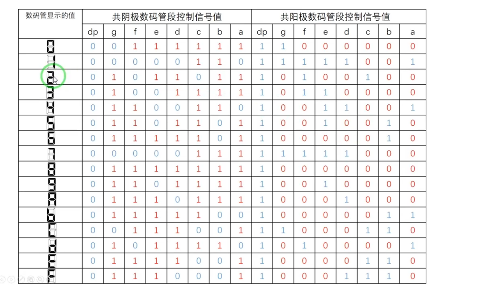
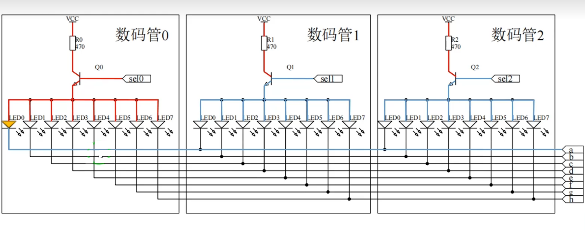
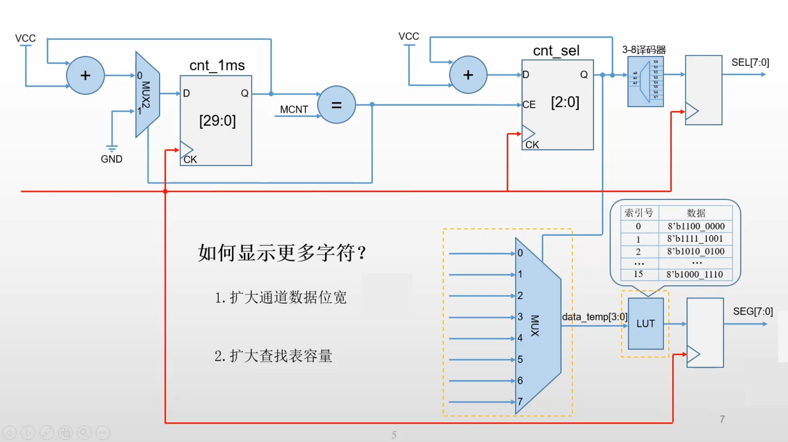
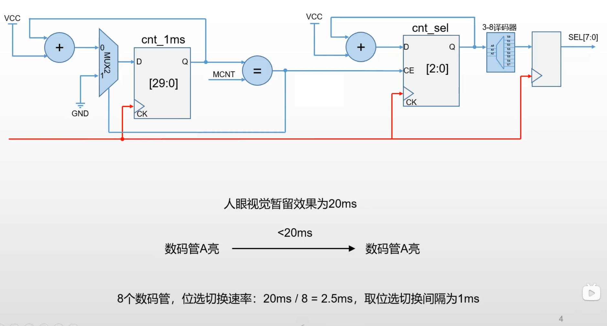
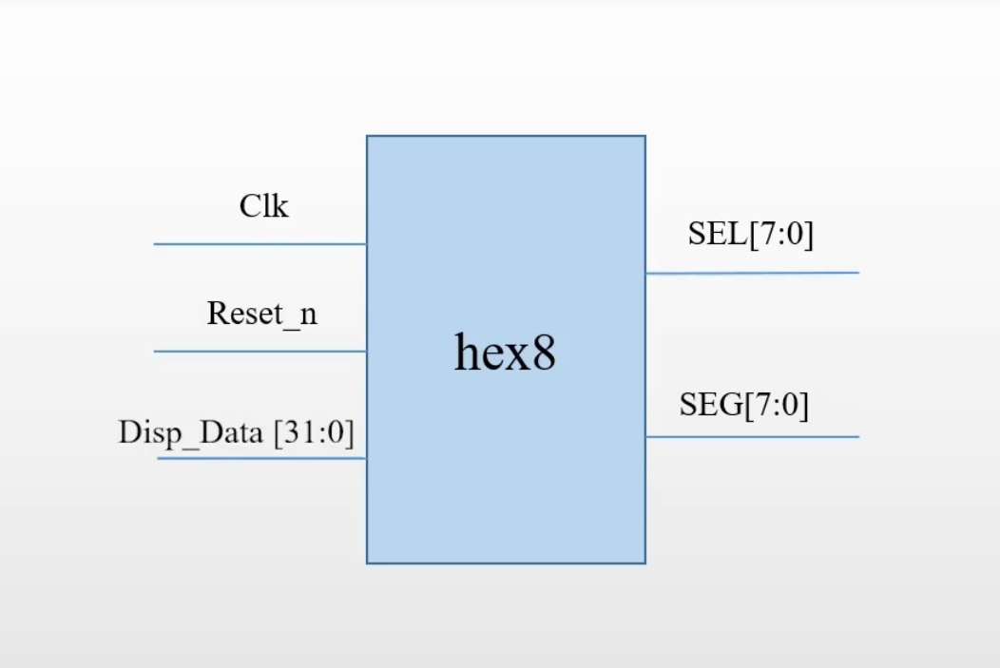
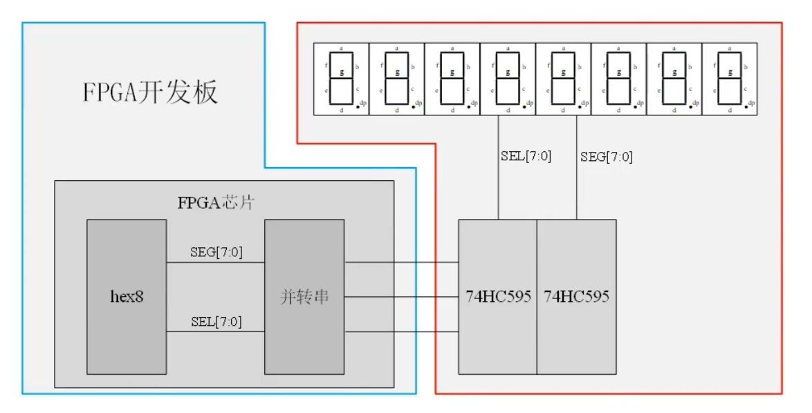
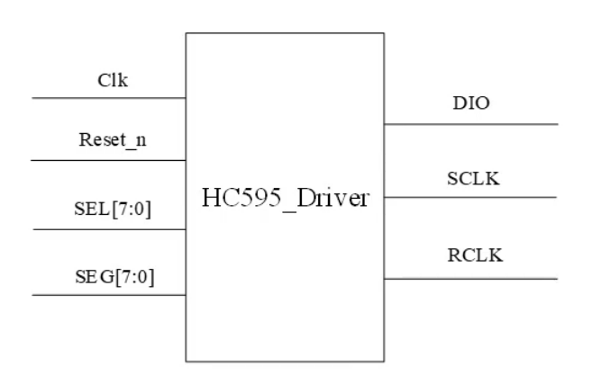

线性序列机结构
- 计数单元：用以计时得到最小时间单位
- 序列计数器，用来标记每一个时间点
- 驱动部分，负责根据时刻表中各个信号的值，在对应时间点驱动信号变化
应用
实现动态扫描数码管
单个数码管以及动态扫描

(a) 七段数码管引脚布局（a~g、dp、GND）及共阴极（sel 低有效）与共阳极（sel 高有效）驱动电路对比

(b) 共阴极数码管段选信号 Seg[7:0] 与各段 LED 的限流电阻驱动连接，sel 为公共位选端

(c) 段选信号 Seg[7:0]=8’b1111_1001 时的数码管显示状态：b、c 段熄灭（红色高亮），其余段点亮

(a) 三路共阳极数码管位选驱动电路：Q0/Q1/Q2 晶体管分别由 sel0/sel1/sel2 控制，段选 a~h 共享，限流电阻 470Ω

(b) 动态扫描时序控制模块：cnt_1ms 产生 1ms 基准定时，cnt_sel 经 3-8 译码器输出 SEL[7:0] 位选信号
电路实现模块设计

(a) 扫描时序生成与位选控制链路：cnt_1ms 定时器→cnt_sel 位选计数→3-8 译码器输出 SEL[7:0]，位选切换间隔取 1ms

(b) 段码数据通路：8选1多路选择器根据 SEL[7:0] 选通通道索引，经 LUT 查找表输出 SEG[7:0] 段码

(c) 顶层模块 hex8 接口定义：Clk、Reset_n、Disp_Data[31:0] 输入，SEL[7:0] 与 SEG[7:0] 输出
驱动：并转串模块接入外设显示器
74HC595 是一个”串入并出”移位寄存器（Shift Register），核心作用是用少数 I/O 口控制大量的输出。

(a) FPGA（hex8 + 并转串模块）经两个 74HC595 芯片驱动 8 个七段显示器：SEG[7:0] 段选与 SEL[7:0] 位选信号流向

(b) HC595_Driver 模块接口：Clk、Reset_n、SEL[7:0]、SEG[7:0] 输入，DIO、SCLK、RCLK 串行输出
这三个信号对应 74HC595 芯片的 3 个核心控制引脚：
| 信号 | 对应 595 引脚 | 含义 |
|---|---|---|
| DIO | DS (SER) | 串行数据输入 — 每个 SRCLK 上升沿把这一 bit 移入芯片内部的移位寄存器 |
| SRCLK | SHCP (SRCLK) | 移位时钟 — 每来一个上升沿，DIO 上的一个 bit 就被”推”进移位寄存器，原来的 bit 整体右移一位 |
| RCLK | STCP (RCLK) | 锁存/输出时钟 — 当 8 bit 数据全部移位完毕后，给 RCLK 一个上升沿，移位寄存器里的数据就被”锁存”到并行输出引脚（Q0~Q7），LED/数码管瞬间更新 |
基于SPI接口的ADC芯片
ADC: (Analog-Digital Converter)，模/数转换器。通常是指一个将模拟信号转变为数字信号的电子元件。
数字信号是在模拟信号的基础上，经过采样、量化和编码而形成的。
ADC具有以下常见指标参数：
- 分辨率：指ADC能够分辨量化的最小信号的能力，用二进制位数表示。常见的有8位分辨率、12位分辨率、16位分辨率等。
- ADC作为模拟转数字的期间，能够进行转换的模拟信号的范围总是有限的，比如ADC0809，转换有效范围是0-5V。
模块设计
施工图纸